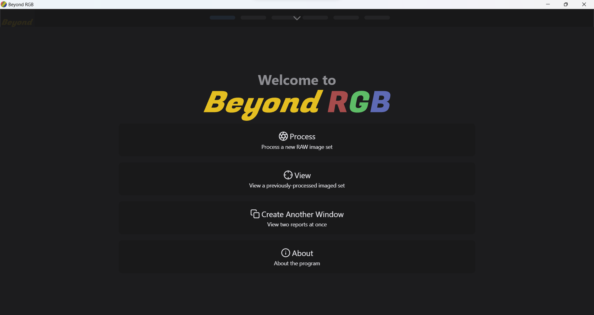

User Guide
Contents
- Overview
- Example Images
- Process
- BeyondRGB Demo
- Spectral Picker
- Calibration Charts
- Issues Running BeyondRGB
Overview
Spectral imaging is a powerful technique that enables higher color accuracy than conventional RGB capture,
as well as material identification capabilities. However, it is still relatively unused for everyday museum
photography due to perceived complexity and high cost. BeyondRGB is a standalone spectral image processing
tool that is user-friendly, yet capable of handling complex image data. It integrates existing image
calibration routines and repackages them into a standalone application, enabling a simpler user experience
over current methods. A user is able to import a number of RAW images and receive a true spectral image in
the form of a TIFF file. You will only need to make a few basic selections before the images are processed.
Finally, you will be able to view and interact with the output images and also inspect reports detailing
the accuracy of the color and spectral calibrations developed during processing.
Use of this application requires 6 or 8 raw images that meet the following specifications:
2 art images (optional) (Images of the same piece of artwork under two different lighting conditions)
2 color target images (Images of the same color target under the same two different lighting conditions)
2 flatfield images: (Images of a white sheet under the same two different lighting conditions)
2 darkfield images: (Images taken with the same camera with the lens cap on - note these can be copies of the same image)
The two images of the art can also include the targets, and in that case only the 6 images are required.
Required Image Examples
| Lighting Condition A | Lighting Condition B |
|---|---|
Art A
download

|
Art B
download

|
Target A
download

|
Target B
download

|
Flatfield A
download

|
Flatfield B
download

|
|
Darkfield A
download
|
Darkfield B
download
|

Process
This is the homepage, the first thing you will see upon starting the application. You immediately have the options to begin processing a new image set or to view an already-processed set (and its corresponding calibration data).
Let's begin with processing an image. The first thing you will see is the option to select whether you will do single image processing or batch processing.
Let's begin with processing an image. Regardless of how many images you choose to process, the next screen enables you to upload your image set. Let's use our example images from above. Then click "next".
This is the page where you can specify where you would like the output files saved to. Simply choose a file location and click "next".
Now we must tell the application which images are which. Drag and drop the images into the boxes with their correct roles or use the auto-sort button which can sort files into their correct roles based on their naming patterns.
This page differs slightly depending on the processing type that was chosen, but they function identically. Click "next" to choose a sharpening level or skip that step.
Now we must tell the application where the color target is. Click the '+' to add a selection grid. Choose the corresponding reference data from the dropdown - in our case it is the "CCSG" target. Drag and reshape the selection grid, so it covers the color target in your image. If desired, you can manually adjust the location of the selection grid. These coordinates are important for having consistency between runs. They will also be saved in the "GeneralInfo" file after the image finishes processing. Finally, enter the row and column of a white patch in the grid - in our case we are using row 5 and column 5. Note that the white patch is highlighted, so you can be sure that you have selected the correct one. Now you can begin processing!
Processing an image can take up to a few minutes, but it will run faster on newer computers. It will run through each step of the process, and it will provide progress data, so you know which step it is currently on. If you are batch processing multiple images, after the first image is complete, the next will automatically begin processing. Remaining art images will begin processing sequentially as they are completed. Once complete, you will have the option to view the image, to view the output files in a file explorer, or process another image. Alternatively, you can also navigate to calibration reports to view calibration data for this run.


Great job, you've successfully spectrally calibrated your first images with BeyondRGB!
BeyondRGB Demo
Spectral Picker
So you have already processed an image, and you want to see its spectral reflectance data. The spectral picker allows you to select certain portions of the calibrated image to view its spectral curves. You can resize your brush, and you can view individual curves or stack spectral curves to compare multiple patches of the same image on the same graph.
Calibration Charts
So you have already processed an image, and you want to see its calibration data. The calibration page allows you to view data specific to the calibration of a single image processed with BeyondRGB.
Issues Running BeyondRGB
If your computer blocks the application because it is from an "unidentified" developer (mac):